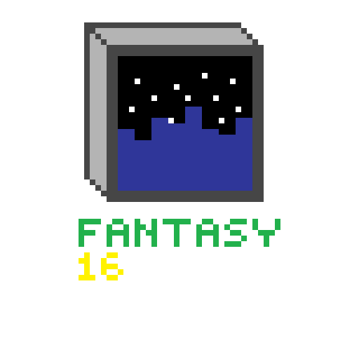

Fantasy16 is a WIP Fantasy Console that uses binary code like a real 16bit CPU
Uses a Havard like architecture
A 16Bit CPU with 16mhz
8kb Ram
A 64*56 screen with RGB565 format
No Sound ;(
ASCII keyboard
It is constructed that it should be easy to port it to everything that supports the C99 standart
There is already CPU instructions implementant but no Virtual GPU, Tick system (to execute at 60fps in a steady 16mhz) or keyboard
It can take some time until the first screenshots come
It is currently worked private